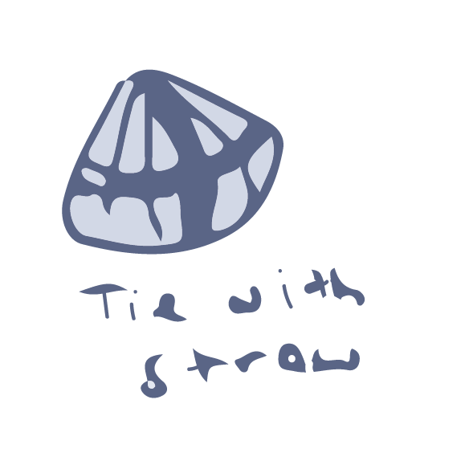
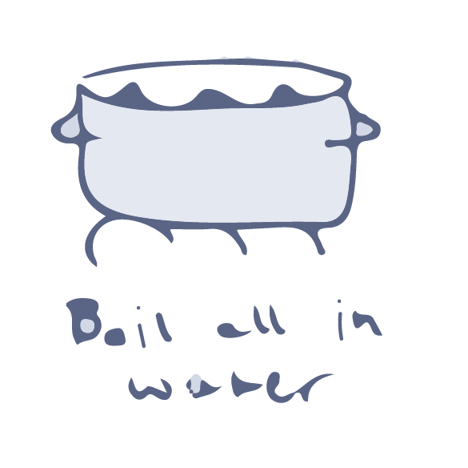
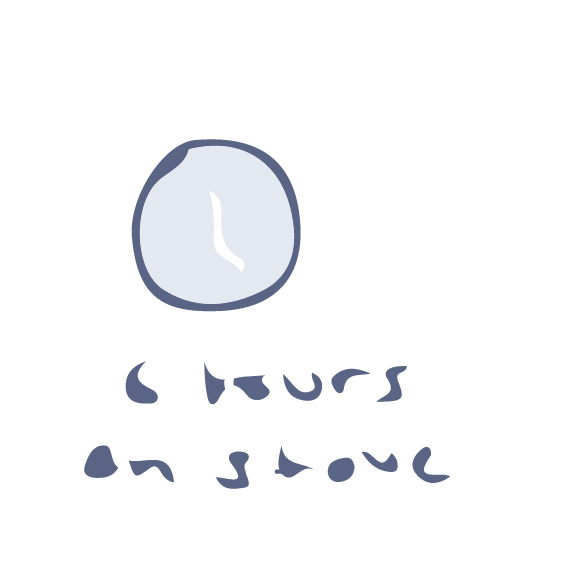
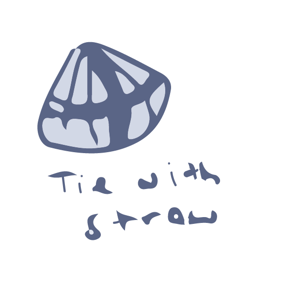
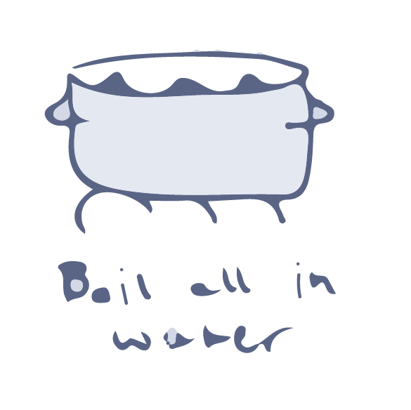
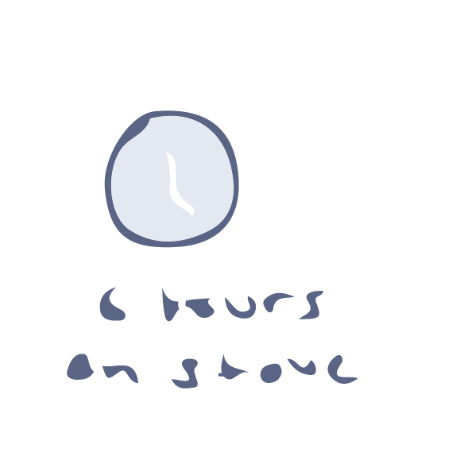

Mom. In the Netherlands, my mom works tirelessly as the first (and only) of her siblings to attend school beyond high school. She studies hard for exams, sticking to a strict food budget. Without the means to purchase pork and without the time to prepare her favorite dish, she seeks shortcuts by leaving out ingredients and using her roommate's pressure cooker to cook the meat faster. She still takes the time to wrap each individual pyramid, but to be honest, they're a little more spherical than pyramidal.
 





Oma. In Indonesia, my oma is taught by her mother to make bachang. It's an activity that takes days of preparation, mostly consumed by marinating meat and letting the lotus leaves soften. She takes the time to prepare each one meticulously by hand. She isn't great at it at first, but hours upon days upon years of diligently crafting them prove to be valuable when she immigrates to the Netherlands as a refugee and can sell perfect pyramids of Indonesian bachang to make ends meat.
Me. In America, I grow up receiving a shipment of frozen bachang from my Oma every year. My mom claims that she can't make them, even though I know she cooked them when she was in medical school. As costs of shipping rise and I become more indpendent, I discover a dish at dim sum restaurants called "sticky rice dumplings." To my eye, they're just bachang, though they taste a little different. I learn they are called zongzi, the Chinese version of bachang. I buy them frozen from the restaurant and steam them at home.